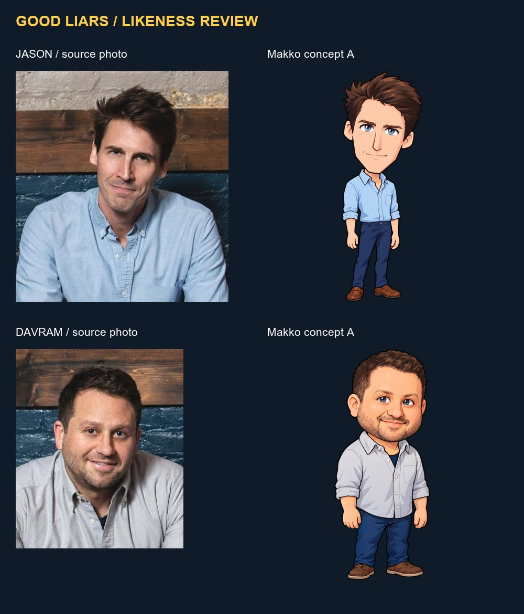
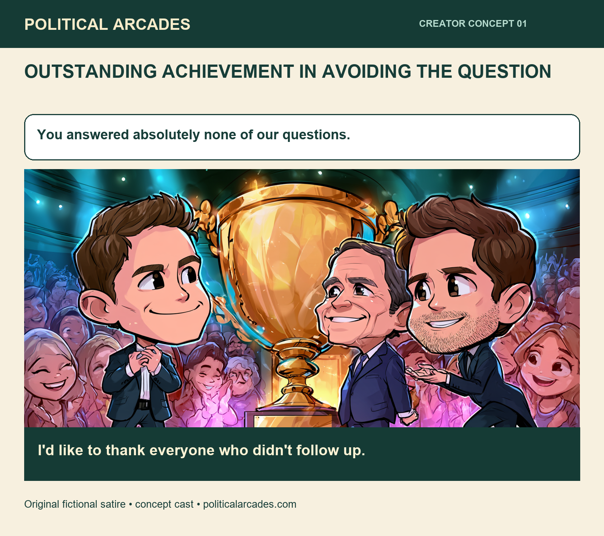

Catch the recipient.
Steer freely around the rally. Release a drag to burst into reach and present a trophy.
POLITICAL ARCADES / CREATIVE COLLABORATION CONCEPT
JASON + DAVRAM
Even if they refuse to accept it.
Trophy Run is a quick game prototype inspired by your participation trophy bit. Burst across the rally with Davram, deliver ridiculous trophies, and return to Jason to get the footage. Carry more attention for bigger rewards, or film now before the aides catch up.
PLAY TROPHY RUNPrototype for creative review. Built from Fwoosh movement with new Makko cast animation and a rally setting. Cartoon political satire. Invented encounters and dialogue. No participation or endorsement implied.
Steer freely around the rally. Release a drag to burst into reach and present a trophy.
Every trophy earns a bigger potential payout, but attention drains your press pass and brings aides closer.
Return to Jason and hold FILM. You stop moving while he saves the clip. Bank eight clips to finish the encounter.
LIKENESSES APPROVED BY TONY
New full-body concepts made in Makko, in separate creator collections inside Alley Relay. The source photos are from the Good Liars' official site. Tony approved these likenesses. The game now uses real Makko run, handoff, and filming animations.

Three animation sets are integrated: Davram running with a trophy, Davram presenting it, and Jason filming.
Early writing and layout draft. The generic cast art needs replacing with the approved likenesses.

Original games, comics, and music videos from Political Arcades.
A short site reel made for Jason and Davram.
Subject: Jason and Davram, I made you a game prototype Jason and Davram, I'm a huge fan of your stuff. Davram trying to give DeSantis a participation trophy in Iowa inspired me to make a quick game prototype called Trophy Run. You can play it here and see a comic idea and some character concepts: https://politicalarcades.com/collab/good-liars/ I'd love to turn it into a real game with you, or work on a different idea if you have one. I'm Tony, co-founder of Makko.ai. I'm building Political Arcades, a site with political satire games, comics, and music videos, where a growing share of profits goes to community causes. I can make cool shit, and I'd like to make you some cool shit. A game, comic, music video, or all three. Take a look when you get a chance. If you like it, sharing it would help us get this thing going. And if there's a bit you've wanted to turn into something playable, I'd love to hear it. Tony https://politicalarcades.com/